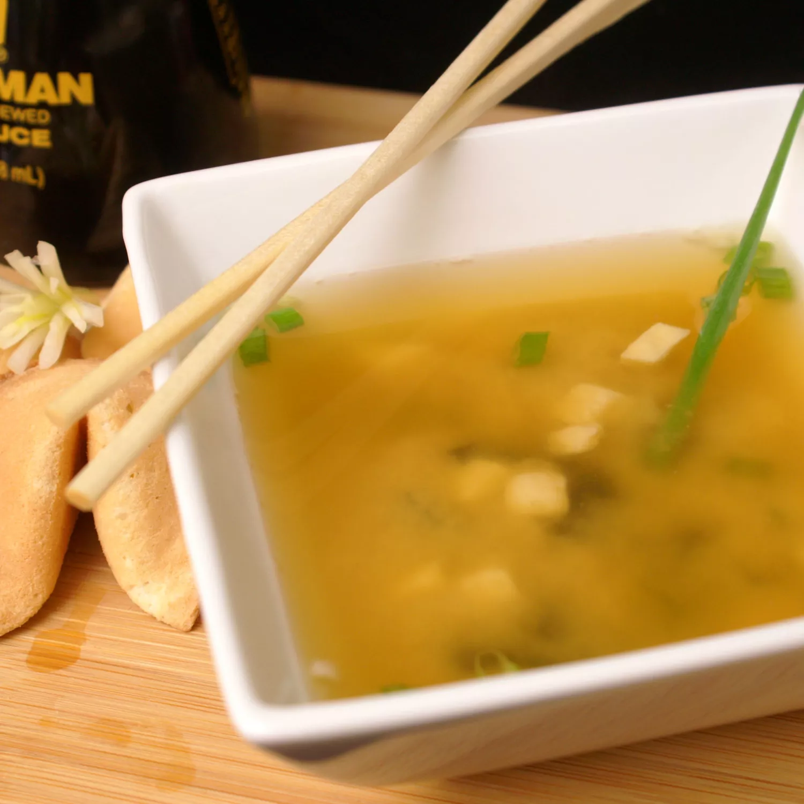

Miso Soup

Ingredents
- 2 teaspoons dashi granules
- 4 cups water
- 3 tablespoons miso paste
- 1 (8 ounce) package silken tofu, diced
- 2 green onions, sliced diagonally into 1/2 inch pieces
Directions
- In a medium saucepan over medium-high heat, combine dashi granules and water; bring to a boil.
- Reduce heat to medium,and whisk in the miso paste.
- Stir in tofu. Separate the layers of the green onions, and add them to the soup.
- Simmer gently for 2 to 3 minutes before serving.